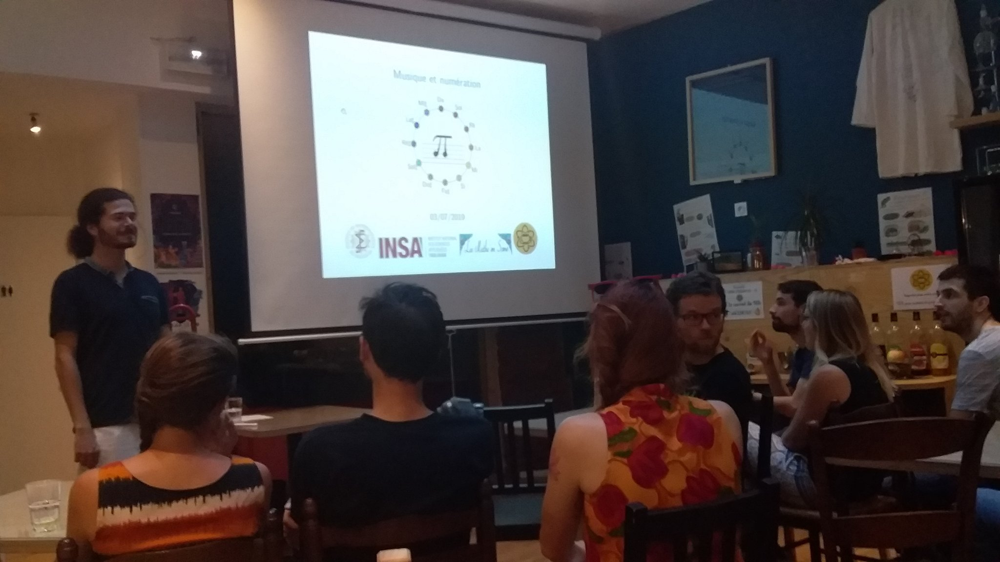

Depuis 2018 j'anime des ateliers et conférences grand public sur le lien entre les mathématiques et la musique.

Exposés
- Atelier au festival "En piste pour les maths", association "Les Maths en scène", 8 et 9 octobre 2020.
- Atelier au festival de mathématiques de Castanet-Tolosan, association "Les Maths en scène", 5-7 mars 2020.
- ApéroMaths à l'Eurêkafé de Toulouse, 3 juillet 2019.
- Colloque Regards de géomètres, classes de primaire/collège/lycée, Musée des Abattoirs de Toulouse, 17 mai 2019.
- Emission à la radio Toulousaine CampusFM, 10 mai 2019.
- Cercle Sofia Kovalevskaïa, 6 avril 2019.
- Projet "Regards de géomètres", classe de Terminale Ferronnerie d'art, Lycée Professionnel de Mazamet, 5 avril 2019.
- Atelier au festival de mathématiques de Castanet-Tolosan, association "Les Maths en scène", 14-16 mars 2019.
- Cafés de l'IMT sur la musique de Pi, 24 mai 2018.
Applications web